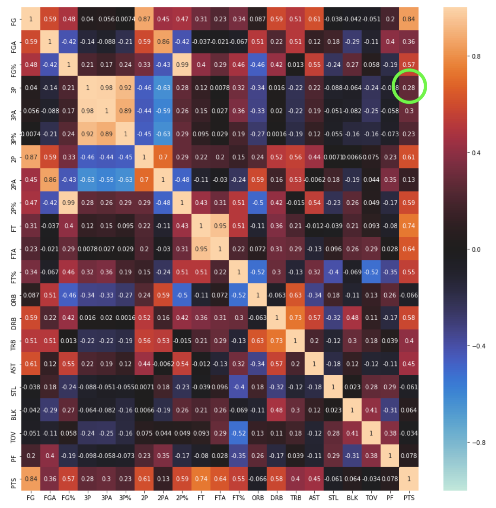
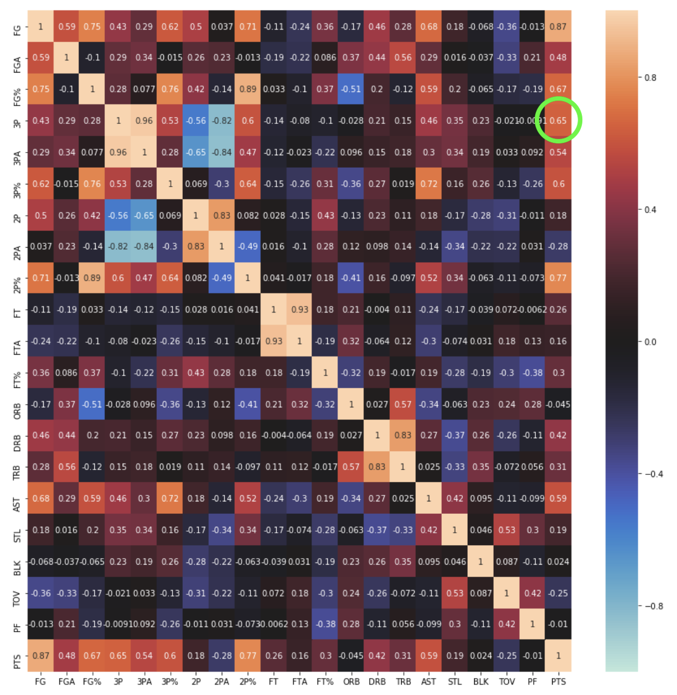
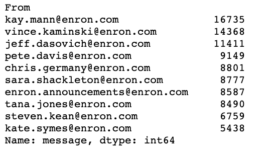
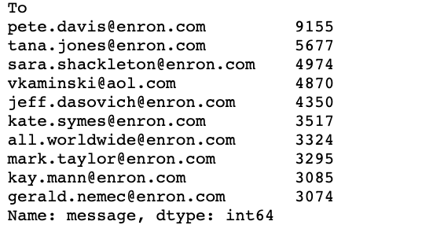
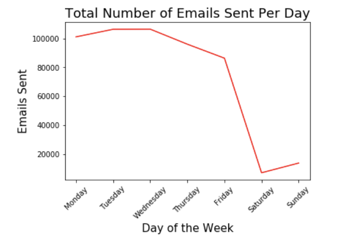
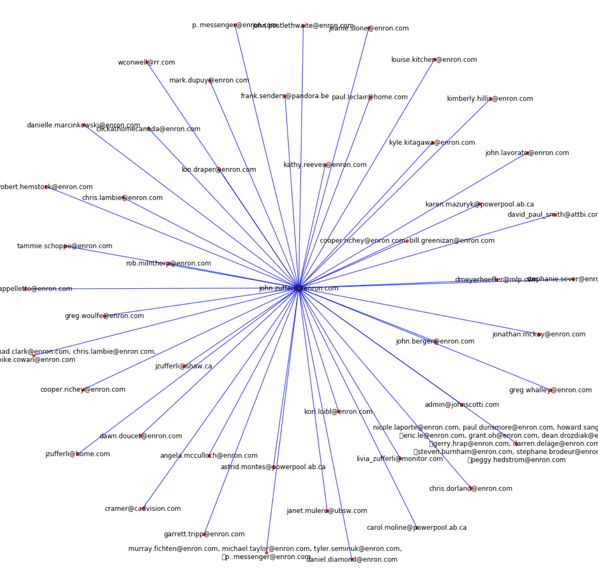
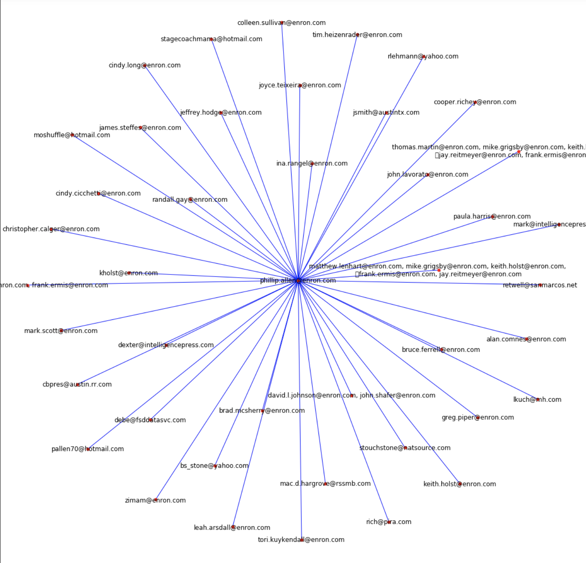

NBA Team Classifier
Goal
Investigate what factors distinguish the successful teams in the NBA and to create model to predict playoff success.
Data Collection
Data was scraped from basketball-reference . Basic and advanced metric statistics were collected by scraping specific tables. The data was then cleaned so a single dataframe represented a single season where the columns were the various statistics, and the rows were the 30 NBA teams. Initially, when working with data from only the past 10 years, the data was collected manually by downloading the tables and then merging them. Labeling the data with each team's playoff result was particularly time consuming when done manually. However, eventually it became clear that collecting data from several years past would be much more beneficial. Thus a scraper was implemented to easily automate the process and allow for data collection from the last 50+ years.
Initial Analysis
There were 58 different statistics used to measure each team during each season. Correlation Heat Maps were constructed to observe the relationships between the feature variables, as well as the change in correlation between features over time. For example, the correlation between points scored and three pointers made rises steadily from 1980(0.1) to 1990(0.28) to 2000(0.45) to 2010(0.54) to 2015(0.65) where it then begins to level off.


Principal Component Analysis
With 58 feature variables for each team it was important to determine which variables caused the largest variance between the different teams. In order to do that, principal component analysis (PCA) was performed on the individual season data and then later on groups of seasons. To visually observe each team data point both 2 and 3 principal components were used. The resulting graphs showed that non-playoff teams were consistently clustered quite well together and the 1st, 2nd, and Conference Final teams are reasonably well clustered together. Principal Component 1 captured a majority of the variance (43% and 40%).


Model Building (K-Nearest Neighbors)
Using K-Nearest Neighbors (KNN), a classifier was used to predict the playoff results from the years 1980-2018. For this classifier it was determined that 5 neighbors produced the optimal results. The training data used was the original data with 58 features (not the PCA data). The training data consisted of data from years 1980-2018. Then 5 fold cross validation was performed to assess the model's ability to successfully predict unseen data. The mean score from the cross validation was 56%. It is worth noting that predicting every team to be 'DNQ' would yield ~46% accuracy.
Model Building (Random Forest)
Next, a Random Forest classifier was used. Once again, the training data used was the original data of 58 features consisting of the years 1980-2018. 5 fold Cross Validation was performed again. The mean score here was slightly higher at 61% and the most important feature in the classifier was SRS (margin of victory, adjusted for strength of schedule).
Model Building (Manual Kmeans Cluster)
What I noticed about the predictions from both the KNN and Random Forest classifiers was that certain labels were never issued when predicting one or even two seasons worth of data. A majority of the data points were labeled as DNQ, 1st Round, or 2nd Round. Many times, a champion would never be predicted. When predicting a single season, it is known how many teams fall into each 'cluster': 14 DNQs, 8 1st Rounds, 4 2nd Rounds, 2 Conference Finals, and 1 Champion.
I wanted to take this into account. Using the PCA data from 1980-2018 consisting of 5 columns: PC1, PC2, PC3, Year, Playoff Result, I found the cluster centroid for each of the labels (DNQ, 1st Round, etc.). While calculating this, the test data was left out by dropping the entries belonging to a certain year. Then the test data was introduced and for each team data point, a distance was calculated from that data point to all 5 cluster centroids. Finally, the appropriate number of data points, corresponding to the cluster size, were assigned to each label by finding the data points with the shortest distance to the centroids.
Each row represents a different season: 2006, 2010, 2015
Conclusions/Results
Three different classification models were used: KNN, Random Forest, and a manual Kmeans Cluster. Given that predicting every team as 'DNQ' would yield a ~46% accuracy, all the models scored quite low.
Results from Various Models
| Model | Mean Accuracy |
|---|---|
| KNN (Standard Data) | 56% |
| KNN (PCA Data) | 55.7% |
| Random Forest | 61% |
| Manual Kmeans (DNQ First, Champion Last) | 58% |
| Manual Kmeans (DNQ Last, Champion First) | 45% |
Success Rate for Picking Correct Champion
| Model | Success Rate |
|---|---|
| KNN (Standard Data) | 21% |
| KNN (PCA Data) | 5% |
| Random Forest | 13% |
| Manual Kmeans (DNQ First, Champion Last) | 0% |
| Manual Kmeans (DNQ Last, Champion First) | 14% |
Adjusted Success Rate (Correct Champion or "Finals")
| Model | Adjusted Success Rate |
|---|---|
| KNN (Standard Data) | 29% |
| KNN (PCA Data) | 8% |
| Random Forest | 31.5% |
| Manual Kmeans (DNQ First, Champion Last) | 4.5% |
| Manual Kmeans (DNQ Last, Champion First) | 14% |
The Random Forest Classifier outperformed the other models slightly overall, but the KNN (Standard Data) model was the best at predicting the correct Champion. Surprisingly, the KNN Classifier trained and predicted on the Standard data performed better than when used on the PCA data. While the manual Kmeans Cluster (DNQ First) was more accurate than both KNN models overall, it was the worst at predicting the champion. It actually got none correct.
The manual Kmeans Cluster (Champion First) performed the worst overall and (expectedly) performed better at picking the Champion than Kmeans Cluster (DNQ First). However, many of the incorrect labels given by Kmeans Cluster (Champion First) were 'DNQ', which is as wrong a prediction as possible.
Enron Email Analysis
Goal
Complete an exploratory analysis for the Enron email dataset to identify intersting trends in the data.
Data Cleaning
The enron email dataset was downloaded from Kaggle as a CSV file. The raw data consisted of a few columns and a message column. The message field contained all the necessary information about each email such as the sender, recipient, time, and actual message content. The best way to store all information appropriately would be to have a column for each field (from, to, date, message, cc, etc.). Because the original message column containing all the information was in the form of a key value pair, the keys were extracted as the main fields and the value was the appropriate value for each field. Thus a final dataframe was created with the keys being the new column headers and the values being the associated rows. Finally the 'Date' column was converted to a Datetime object for later analysis.
Initial Analysis
The first step was to observe the emails addressess contributing most to the dataset. To do this, the email addresses found most frequently in the 'From' column and the 'To' column were identified. These emails would be those who sent and received the most emails.


Date Analysis
The first part of the exploratory analysis consisted of looking at who was sending and receiving the most emails. Because the 'Date' column was converted to a Datetime object in the cleaning process, the specific day of the week and date of each Datetime object could be extracted. To get the total emails sent per day, the rows were iterated through and each corresponding day of the week was appropriately incremented. To find the average per day, it was important to find the number of distinct Mondays, Tuesdays, etc. Then the total from each day could be divided by the number of distinct days and finally plotted.


Time Analysis
The first part of the exploratory analysis consisted of looking at who was sending and receiving the most emails. Because the 'Date' column was converted to a Datetime object in the cleaning process, the specific day of the week and date of each Datetime object could be extracted. To get the total emails sent per day, the rows were iterated, and each corresponding day of the week was appropriately incremented. To find the average per day, it was important to find the number of distinct Mondays, Tuesdays, etc.
Graph Analysis
Because the email dataset consists of a 'from' and 'to' column, one way to visually model the data is through a graph, specifically an undirected graph. Each node in the graph represents each email address and the edges represent every email sent between various email addresses.


Tablut Board Game
Goal
Recreate the Tablut board game and create an AI to enable Human vs AI and AI vs AI functionality.
Game Rules
The objective of the white pieces is to get the King piece to the edge of the board. The black pieces try to capture the king before it reaches the edge. The 16 black pieces start the game first. The white pieces, with the king at the center of the board, move next and the two sides alternate turns. All pieces move like chess rooks, any number of squares vertically or horizontally. No piece can occupy the same square as another piece and no piece can be 'jumped'. No piece other than the king may land on the middle square. Capturing commonly occurs by sandwiching an enemy piece on two opposite sides. The king is captured like any other piece except for when it is on the center piece or any of the four orthogonally adjacent squares. In this situation the king must be surrounded on all four sides by enemy pieces.
Game Design
The first step of the project was to design the board and the necessary data structures to store information about the current state of the board, the pieces, and the possible moves. Then all the rules for the game were implemented. The interesting part of the project was designing the AI agent. This was done by using the Minimax algorithm and alpha-beta pruning. Essentially, the current state of the board is sent to a heuristic function which returns a low score if the board is favorable to the black player and a high score if favorable to the white player. This heuristic function takes into account the location of the king and the number of pieces remaining. If the move results in a win, the score is set to a maximum. A game tree is constructed where edges represent moves and nodes represent the score. When the depth limit is reached or a node is a winning move, the algorithm picks the optimal path. Using this approach, the AI can detect a winning sequence within a few moves.